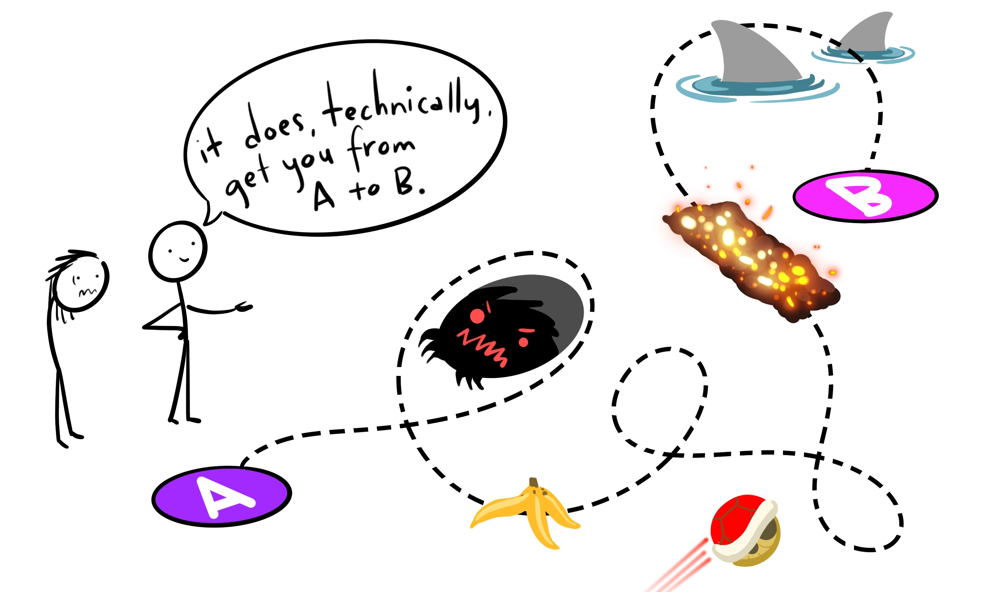

1 Syllabus
1.1 Basic Info
Psyc193: Introduction to R for Social Sciences
Winter 2025
Lecture: TuTh 11:00am-12:20pm
1.2 Course Description
Whether in academia, industry, or clinical settings, if you are interested in social sciences or data science, you are going to have to work with data. You’ll be using that data to perform analyses, make visualizations, and try to answer questions. Using programming languages and coding-based approaches are increasingly favored over GUI-based approaches (e.g., Excel, JMP, SPSS, etc.). The goal of this course is to provide an introduction to one such programming language, R.
1.3 Course Objectives
There are 3 main sections of content in this course:
- R Basics
- Data Visualization
- Data Manipulation and Cleaning
Along the way, you will learn how to use R to …
- Import data for cleaning
- Wrangle and Prep data for analyzing
- Make publication-ready visualizations
Communicate what you have learned about your data …
- In literate programming documents
- In an APA formatted written report
Contribute to open and reproducible science through …
- Adopting good coding and project management practices
- Sharing your data and research reports online
This course is designed such that, by the end, you will be able to use R to successfully accomplish all the basic tasks you will have to do in other classes or lab volunteering. Content was chosen specifically based on what other students have mentioned they do most often.
1.4 What Kind of Preparation Is Expected For This Course?
None! There are no prerequisites for this course, nor do you need to have any prior knowledge or experience with coding. However, if you have such experience, you may find it useful.
1.5 Instruction Team
Professor
Name: Dr. Ethan Hurwitz
Email: ehurwitz@ucsd.edu
Office Hours: By Appointment (contact me to schedule)
1.6 Course Structure
1.6.1 Flipped Course Info
No matter what, following along live coding synchronously is difficult. It helps to be able to pause or rewind when something is not clear and you need some more time to think. That obviously cannot be done while content is being conveyed live. Based on this, and feedback I have gotten from previous students, this course will utilize a flipped structure.
Before each class, I will release online lecture notes as well as a recorded lecture where I cover the material. You can watch those and following along with the relevant files as you would in class synchronously. This allows you to get practice implementing the code as it is being introduced, but also be able to pause or rewind if needed. Classes will be treated as open office hours / study halls. You can ask questions about the lecture material, get live help, work through problems together, and make progress on assignments during class time!
1.7 What Tools Will We Be Using In This Class?
All course materials are free. You have enough expenses, I am not interested in adding to them unnecessarily.
- Computer with R and RStudio
-
Website
- You’re looking at it right now! This website will functionally be the course textbook. This is where I will upload all lecture notes and information.
-
Canvas
- Canvas will be used for downloading and submitting assignments as well as grades.
-
Discord
- We will use Discord as a central place to manage questions about the class, communicate with each other, and easily copy/paste code for sharing. Checking the discord is an expected part of the class.
-
Zoom
- For office hours held via zoom.
-
Anonymous Feedback
- This is a place to submit anonymous feedback to the teaching team.
1.8 Grades
1.8.1 What Are the Graded Assignments In This Class?
This class has NO EXAMS. Yes, that is right.
- Time constrained coding is not reflective of most real-world scenarios (at least those you’ll initially find yourselves in).
- Exams would not do a good job of assessing whether you are learning what I want you to learn.
However, there must be some things to grade you on. They are the following:
Exercises (x10)
- Basic exercises that match up with lecture content applying the concepts/material being introduced.
- The order of questions will almost always mirror the order of content in the notes/lectures. They are designed to be able to be completed in parallel.
Practice Problem Sets (x9)
- Similar in format to the exercises.
- Provides you an opportunity to practice applying new skills and ideas on your own, but still in a relatively directed way.
- Also designed to mostly mirror the order of content in the notes/lectures.
Skills Challenges (x3)
- Each of the 3 main sections of content covered in this course has an accompanying Skills Challenge.
- Skills Challenges will provide an opportunity to apply concepts in a “real-world” scenario.
- They will also have some questions that are more abstract/conceptual, requiring you to really think about the data you are working with (similar to what you would be doing in a job/graduate program in Social Sciences).
1.8.2 How Does Grading Work?
Graded assignments will be downloaded and submitted on Canvas. For each assignment, you will submit a knit .html document and the source .Rmd document (more on this later). Submissions that do not include BOTH file types will be considered incomplete after week 1. All assignments are due by Sunday at 11:59pm the week they are released i.e., anything released on Monday of Week 1 is due by that Sunday at 11:59pm (before Monday of Week 2), etc. If you submit the Exercise assignment(s) for a given week by Wednesday at 11:59pm of that week, it will be graded with feedback by that Saturday at the latest. Thus, you will be able to use that feedback for the Practice Problem set on the same topic and potentially avoid making repeat errors across assignments. This is not required, and assignments will only be considered late if they are submitted after the Sunday at 11:59pm deadline.
This course is designed to facilitate your engagement and effort with the material. What is going to help you learn and develop R skills the most is to actually practice doing coding… a lot. It is thus, in my view, counter-productive to have a single heavily weighted assignment (exam) or for there to be high amounts of pressure to find some singularly correct answer to every problem.
In service of this, there will be no exams. Also, the Exercises, Practice Problem Sets, and Skills Challenges, will be graded 50% for completion and 50% for accuracy. To earn the completion portion of the credit, you must demonstrate that you were actually engaging with the material in a meaningful way and trying your best. You will not earn this credit by just copy/pasting the same bit of code, or writing, “I don’t know,” for each question. I will check this. Additionally, several questions on assignments do not have a singular correct answer. You only need to use the code accurately (which can often be done many ways)!
1.8.3 Is Code Graded For Quality?
NO!
Artwork by Horst (2022)
This is an intro course that assumes no prior knowledge. As long as your code ultimately gives you what you want, and you are not cheating or breaking any rules, it does not matter how circuitous or un-glamorous that code is!
1.8.4 Grade Breakdown
The full grade breakdown is as follows:
| Assignment | Total % |
|---|---|
| Exercises | 30 |
| Practice Problem Sets | 30 |
| Skills Challenges | 40 |
Final letter grades in the course will be assigned according to the following percentage scale:
| A+ | TBD | B+ | 87.00-89.99 | C+ | 77.00-79.99 | D | 60.00-69.99 |
| A | 93.00+ | B | 83.00-86.99 | C | 73.00-76.99 | F | 00.00-59.99 |
| A- | 90.00-92.99 | B- | 80.00-82.99 | C- | 70.00-72.99 |
Grades will be rounded to the nearest hundredth of a point and the stated letter grade cutoffs will be applied without exception. There is no plan to “curve” grades in this course. Your instructor reserves the right to adjust all students’ grades up by a set value if deemed appropriate, and grades will not be adjusted down under any circumstances. At the end of the term, I will determine whether/how to award A+ grades for outstanding performance.
1.9 Course Policies and Other Info
1.9.1 Attendance
Lectures are flipped and there are no class participation credits. Class meeting times are designed to be times where you can come, work on the assignments, and get live/immediate help from me. Thus, the course can be completed entirely asynchronously. However, it is invariably the case that the students who regularly attend class meetings or engage with me attain the highest grades in this course. So, I strongly encourage you to attend at least occasionally and make sure to get your questions answered.
1.9.2 Late Work
Exercises, Practice Problem Sets, and Challenges, can be submitted up to 2 weeks past their due date for late credit. The late penalty is 10% per week late, and will only be accepted up to 2 weeks past the due date. The reason for this is that, similar to other language or math courses, the material we learn throughout the term is contingent on the immediately preceding content. Thus, if you do not stay on top of the material, you will get lost and be unable to keep pace with the assignments.
1.9.3 Extensions
Assignments have due dates that afford a lot amount of time to complete them, and should be able to accommodate instances where you get sick or something else comes up. However, each student will have one “emergency button” they can push. You can use an emergency button to remove one week’s late penalty on any week’s assignments. If something comes up and you must submit assignments late, you can push your “emergency button” and submit it up to one week late with no late penalty. This is something you can only do once all quarter, and must let me know explicitly when/if you use it!
Please reach out to me if you are struggling or any unique situations arise.
1.9.4 Email/Discord DMs
If you would prefer to ask a question privately, you may email me, send me a DM on discord, or come to my office hours. My preference would be an email or Discord DM, as I will check those more frequently. If you choose to email, please include “PSYC 193” in the subject line of your emails. Doing this will make sure I see your message in a timely manner.
1.9.5 Academic Integrity
All students are expected to adhere to standards of academic integrity. Cheating of any kind on any assignment will not be tolerated. It is disrespectful to your peers, the university, and to me. Especially considering this course is designed with a grading scheme that rewards effort and engagement and does not disproportionately favor correctness.
If you are unsure what might constitute a violation of academic integrity, consult me and/or the UCSD website on academic integrity. Any evidence of academic misconduct will be reported to the Academic Integrity Office. Consequences for academic misconduct may include a failing grade in the course and official action by the University. Please, do not make me have to do this. If you are struggling with the course content or anything else, reach out to me.
1.9.6 OSD Accommodations
Any student with a documented disability will be accommodated according to University policy. For details, please consult the Office of Students with Disabilities (OSD). If you require accommodation for any component of the course, please provide me with documentation from OSD as soon as possible. Please note that accommodations cannot be made retroactively under any circumstances. For example, if you submit a Skills Challenge and afterward provide documentation that you require extra time, you will receive accommodation only on subsequent assignments and not on the one that you have already taken.
1.9.7 Extra Credit
You may earn up to 2 points of extra credit which will be added to your overall grade in the course. One of those points can be earned by completing SONA participation credits (1 SONA credit is worth 0.5 EC points). To sign up for an experiment, go to the SONA website. To earn the full point of extra credit in the class, you must complete 2 SONA credits. Please note that completing 1 study on SONA does not always mean earning 1 SONA credit, and there are differences in credit hours for in person vs. remote studies.
The second extra credit point can be earned by completing the SETs for our course as well as an additional survey sent out at the end of the quarter. If 75% of the class completes BOTH, the entire class will earn 1 extra credit point.
1.10 What We Expect From You
1.10.2 Code of Conduct:
You do not need to become friends with all of your fellow students in class, but you are expected to treat me and them with courtesy and respect. This class should be a harassment-free learning experience for everyone regardless of gender, gender identity and expression, sexual orientation, disability, physical appearance, body size, race, age, or religion. Harassment of any form will not be tolerated. If someone makes you or anyone else feel unsafe or unwelcome, please report it to me as soon as possible. If you are not comfortable approaching me, you may also contact the UC San Diego Office of the Ombuds.
1.11 What Will We Learn?
In choosing what content to include, this was my philosophy:
-
I wanted to spend more time practicing a few skills so they could be deeply learned, rather than cover a broader array of material with less depth.
- Focusing on a narrower amount of content affords more practice time with that content and better learning.
I decided to focus on the skills and things you are most likely to be applying soon after this class
-
I spoke with students who have come out of my other R classes, asked them:
- What do they do/use most often?
- What do they wish they had learned?
- Showed them some things I considered including and asked if they thought it would have been helpful.
The answers to these questions helped me determine what content to include in this class.
-
I am always happy to chat about things outside the scope of course content! In office hours or email/discord/whatever.
1.12 Schedule
The schedule below is tentative and subject to change.
| Week | Topic |
|---|---|
| 1 |
Why Use R? Coding Basics Using R Effectively |
| 2 | R Basics Challenge |
| 3 | Intro to ggplot |
| 4 | geoms and graph types |
| 5 |
ggplot Customization Color Theory |
| 6 | Data Viz Challenge |
| 7 |
Control Flow Transformations |
| 8 | Basic Wrangling |
| 9 |
Advanced Wrangling Summarizing |
| 10 | Data Manipulation Challenge |
1.13 Words of Advice
Learning a new language, particularly a programming language, can be frustrating at times!

Artwork by Horst (2022)
It is truly a roller coaster. With time, effort, and perseverance, you will be surprised at how much you know and are able to do (and how much more you can learn and do)!

Artwork by Horst (2022)
1.13.1 Feedback From Previous Students:
Don’t just take my word for it! Here are some suggestions and advice from students who took this course previously:
“When going into this class, don’t over think or complicate things. If you find yourself in this situation and taking too long on the assignments, ask for help! I thought it was embarrassing asking for help in the beginning, but I benefited greatly from it. Also, stay on top of the assignments because its easy to fall behind. I recommend not waiting till the day it’s due. Finally, it’s better to turn in an assignment a day late and completed rather than rushed or not at all.”
“Make sure to utilize the lecture notes while watching lectures and doing the assignments! There is a lot of material for this class, but it becomes easier once you realize that most of the exercises and assignments are based around the notes.”
1.14 How to be Successful in this Course:
Learn how to troubleshoot things on your own. This entails learning how to google and how to debug. This is NOT because we don’t want to help you, but because the most impactful learning can come when you solve a problem yourself.
Do not hesitate to ask questions or for help! If you try to solely struggle alone, it will often not work out well. Ask the teaching team or your classmates questions.
Pay attention. It should be obvious but if you do not come prepared to learn and pay attention, it will be really difficult for you.
Practice. Again, this is a skill. You cannot learn R effectively by just reading instructional material. You have to actually do it yourself. Write shitty code, have it fail, see what went wrong, read the error messages, and then write better code.
Try to keep a good mindset. Acknowledge that this is challenging, but is not impossible, that you have help available and know what our expectations are for you.
Be proactive. This is a Summer Session course, and we will be moving very quickly through material. If you constantly wait until the last minute to do things, you run the risk of not only just missing work, but falling behind and having trouble being able to catch up.
1.15 Acknowledgements
I’d like to directly thank Emma Geller, Judy Fan, and Angela Lowe, for sharing their syllabi materials, teaching philosophy, and mentorship. Throughout this course, I will use many illustrations created by the brilliant Allison Horst.